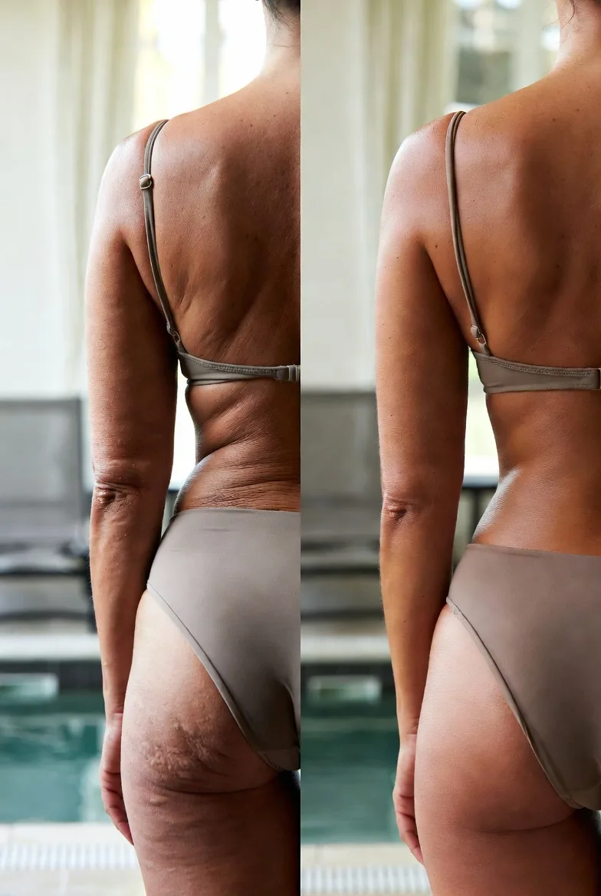
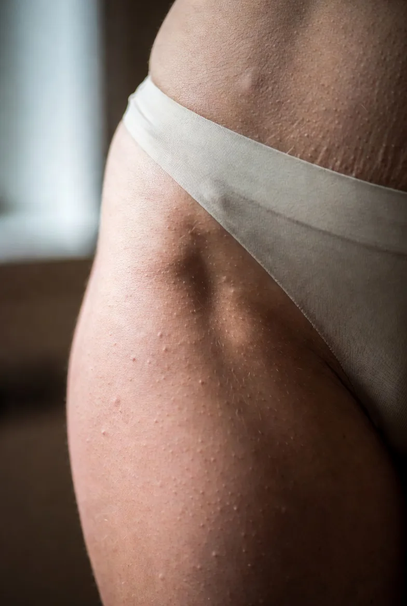
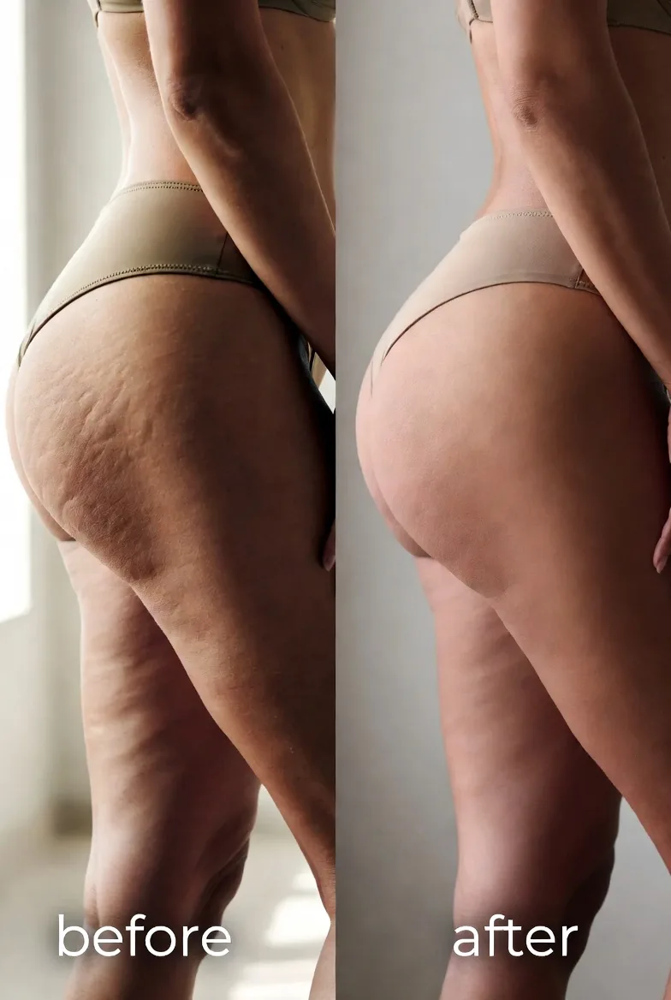
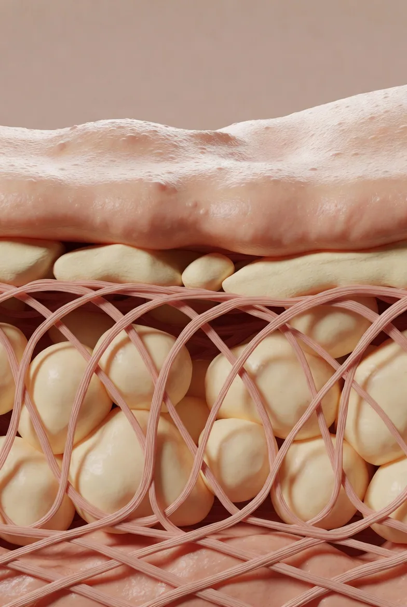
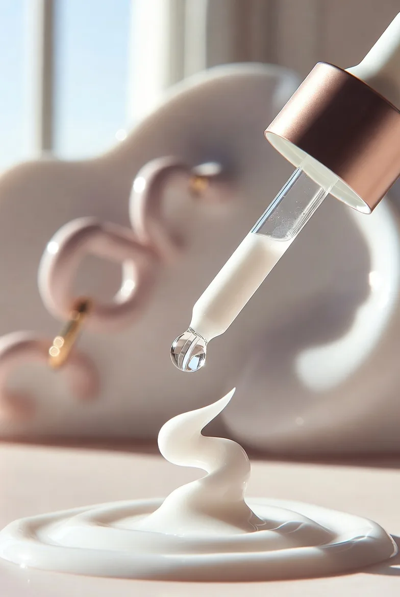
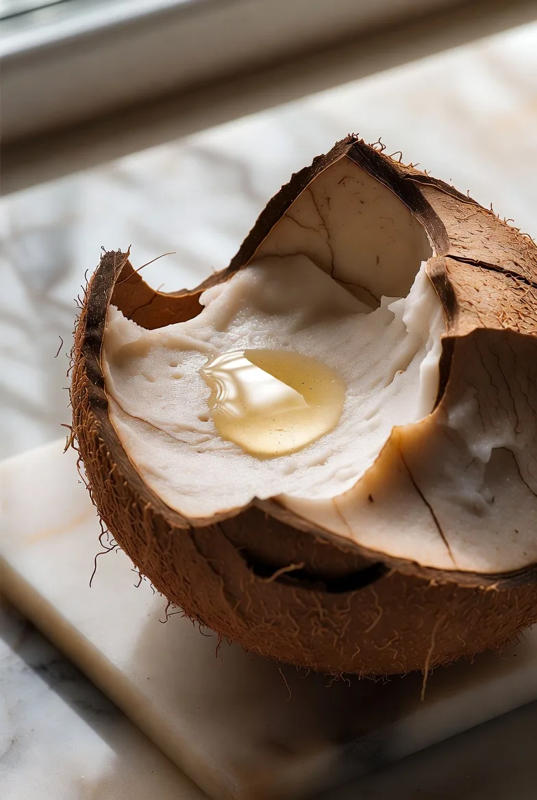
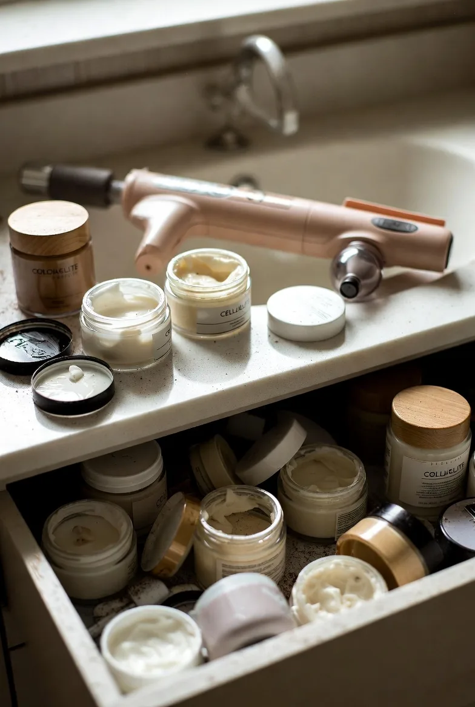

Exclusive
Two Months Ago My Backside Looked Every Bit of 63. Then a Stranger at the Swimsuit Shop Asked Which Surgeon Did My Brazilian Butt Lift. Here's the 30-Second Habit Women Everywhere Are Quietly Switching To

Last week, a young woman at a swimsuit shop made me cry in a fitting room.
She wasn't being nosy... Just the opposite.
I was carrying an armful of swimsuits back to the fitting rooms when she stepped over to hand me a different size...
She caught my reflection in the mirror — the back of me, in the suit I was trying on. Her eyes went wide.
"What's not right?" I asked.
She glanced from the mirror back to me, then to the mirror again.
"You're telling me you're 63? With a backside like that? I would have put you in your forties. Easy. Whoever did your BBL is a genius."
I told her thank you — and that I'd never had any work done. Then I picked up my things and stepped into the fitting room.
I pulled the curtain and stood there for a full minute, trying not to lose my composure...
Because a year ago that same young woman would have glanced at me, at the back of my jeans, and thought nothing of it.
She would've thought: "Yeah, gravity got her too." Maybe worse...
But six months ago something shifted.
It wasn't surgery. It wasn't a BBL or fat transfer or getting work done... And it wasn't some $200 cellulite cream that an influencer sold me on.
No, it was something I do for under a minute, twice a day.
It costs less than what I used to waste on firming lotions and spa wraps. And it works so well strangers assume I paid a surgeon for it...
I want to tell you what works for me. Not because I'm bragging. Not because I'm getting paid (I'm not).
I'm telling you because I spent four years and thousands of dollars trying to fix my flat, dimpled, sagging backside...
If anything in this article spares another woman from that same frustrating loop... and helps her feel less invisible from behind... then the time I spent writing it will be worth the effort.
So pour yourself something warm and settle in. What follows is the truth about what happened to my body this past year — and what made it possible.
Check Current Availability →50% off · Free shipping · 180-day guarantee
The Eerie Moment I Realized My Backside Had Aged a Decade Overnight
Let's rewind to last year. I'd just turned 63 and I felt like my body had aged a decade overnight.
Every morning was the same routine... Step out of the shower. Catch the mirror. Wince.
The woman in the full-length mirror was someone I didn't quite recognize anymore.

My once-round backside had gone flat and dropped — it sagged into the back of my thighs with no lift left at all. Dimples and cottage-cheese texture had spread across the top of it. Pale, silvery stretch marks streaked over my hips. And the skin had gone loose and crepey, the kind of texture no pair of jeans can hide.
My body looked old, deflated, and tired.
And it's not like I wasn't trying to fix it. I'd spent years and thousands of dollars on firming creams and treatments...
I bought those $180 "anti-cellulite" creams the spa pushed on me. Burned through six different brands. No real results.
The prescription retinol body lotion everyone treats like gospel? My skin reacted like I'd rubbed on paint thinner. Red. Flaking. Itchy for weeks.
Fascia blasters, cellulite cups, and those vibrating massagers the influencers swear by? I owned two. They've been sitting in my closet for over a year, untouched.
I'd even considered more advanced clinical treatments. But I really wanted an easy, effective, at-home solution. And $600 per session every few weeks is something I couldn't afford long term.
In fact, my friend Diane got a Brazilian Butt Lift two years ago. She spent $8,000! And she couldn't sit down properly for months — she had to sleep face-down for weeks.
That's not what I wanted. To be honest, I felt completely hopeless.
The Problem Wasn't Just About My Body, It Was About How I Felt...
And I felt invisible all the time. At the pool, I kept a sarong knotted at my waist and never took it off. My husband stopped noticing me years ago. Not out of unkindness, just because there was nothing new to see.
I looked at a recent photo from a family beach day and just stopped cold... Who was that woman in the sarong at the back of the group? I knew. I just didn't want to admit it. I didn't want to admit I barely recognized my own body.
That's when I knew something had to change. I didn't want to just accept "getting old from behind" and give up. I wanted to find a solution, something that actually works for women like me.
And I won't lie to you... I did start researching BBL surgeons, printing out consultation forms, weighing my options. It's true, I was desperate.
Then, on a random Sunday night a few months ago, I saw something that left me speechless — and finally gave me some hope.
How a Random Sunday Night Led Me to Discover What the Beauty Industry Has Been Hiding
I was scrolling Facebook half-awake. The aimless late-night scroll everyone does nowadays.
But then a photo stopped my thumb. It was from my old college roommate, Beverly.
We've been friends for forty-two years. She's ten months older than me. But the woman in this photo — poolside, in a two-piece — wasn't the Beverly I'd seen at our last reunion three years back.
Not "looks great for her age" different. Not "must be a good angle" different. From behind she looked twenty years younger than she had the last time I'd seen her.
The dimples were gone, her skin was smooth, and her backside was lifted and firm. She looked natural, not like she'd gone under the knife...
So I dropped her a comment: "WOW! Looking amazing!!" And then I sent her a message.
The three dots came right back. "Margaret! It's been too long," she replied.
I read the message twice. A cream? After all the creams I'd tried...
"I've tried EVERY cream," I typed back. "I know. I know, me too," she said. "My friend Jill actually put me on to it last fall. She found them online. They use some kind of Brazilian peptide that actually targets the root cause of cellulite and sagging. I didn't believe it either. Then I tried it."

Beverly sent me two photos of herself. Her before and after — from behind. When I tell you my jaw hit the floor I'm not kidding. The difference was unbelievable.
In just three short months, Beverly's backside was completely transformed.
So I asked for more information. Beverly sent me a link to a medical report. It was something from a Brazilian dermatology lab. The report was filled with clinical trials, ingredient comparisons, and information on a little-known Brazilian peptide...
It's a peptide that's making waves in the beauty industry. So I spent the next hour reading through the whole report. There were tons of women in their 50s, 60s, and 70s with incredible transformations.
One study in particular caught my eye. It was published in a journal called Cosmetics. The study showed women who used this Brazilian peptide saw 52% less cellulite in just 28 days.
The before-and-afters from the study looked staged at first. And here's the thing: I knew this song and dance. I've been the woman dropping $80+ on a firming cream because the testimonial photos looked legitimate. I was skeptical. I almost closed my laptop and went to sleep.
But something stopped me: I've wasted thousands on treatments that didn't work. What if this is the real deal?
Plus, there was no risk. There was a 180-day money-back guarantee right there on the page. If it didn't work, I'd get my money back. There was nothing to lose.
I picked the 3-jar option. I thought: if I was actually going to test this, I needed enough product to commit. Free shipping took my last excuse off the table.
So I decided to give this Bumbum Cream a try, and clicked Order.
Check Current Availability →180-day money-back guarantee · Free shipping
As I was getting ready for bed, I said to myself: "Margaret, when are you just gonna accept it?" I had absolutely no idea my life was about to change completely...
Week 1: The Cream Did Something Almost Immediately That I Couldn't Quite Name

The package showed up a few days later. I opened it right at the door. The packaging was clean and chic. The instructions were simple and straightforward.
After your shower, apply a small amount to your backside, hips, and the tops of your thighs. Then massage into the skin for about 30-60 seconds. That's it. It was so easy.
The first thing I noticed was the texture. The cream didn't feel like a cream. It melted into my skin in seconds. No grease. No film. Just... gone.
I ran my hand over my hip and it felt different. Firmer? Smoother? I couldn't put it into words. I told myself, "Margaret, don't be ridiculous. It's been five minutes." I went to bed.
It doesn't sound that sweet, but the way he looked at me was... different. Because Robert hasn't looked at me like that in YEARS.
I excused myself. I walked to the bathroom, closed the door, and turned to check the mirror over my shoulder. The dimples on top weren't as deep. The skin looked tighter. My backside looked... lifted. I gripped the edge of the sink. "Oh my Gosh," I whispered. Something's happening.
Week 2: I Couldn't Wait to Look in the Mirror in the Morning
Every morning, I'd wake up and turn to the mirror. Every morning, my body had changed a little more.
The dimples that used to cover the top of my backside? Softer. Way softer. The cottage-cheese texture across my hips? Almost gone. Truly. The silvery stretch marks? Fading. I could SEE it.
And the FIRMNESS. I don't know what else to call it. My skin was bouncing back again. It had been slack for a decade. Somebody just plugged it back in.
I started taking pictures. Mirror shots over my shoulder. Shots in my bedroom. Shots in the bathroom light. I'd compare them to a photo from a few weeks before, flipping back and forth. Same lighting. Same body. Two different women.
I sat on the edge of my bed one afternoon, staring at those two photos. And I started to cry. Happy tears, this time. Because for the first time in two decades, I felt like ME again. That sounds silly when I write it out. But it's the truth. I felt like me.
Week 4: People Started Complimenting My Figure, and I Knew the Changes Were Real
It was a Tuesday. I'd been so distracted that morning that I threw on a pair of fitted jeans instead of my usual long tunic. I didn't realize until I was already at my desk. Old me would've spent the rest of the day hiding in my office. New me? I didn't really worry about it.
Around 11 AM, Patricia from accounting walked past my desk. She walked past. Stopped. Turned around. Came back. "Margaret." "Hi, Patricia." She just stood there. "Okay, what are you doing? Your figure looks amazing lately." She pointed at me. "Have you been working out?"
I told her about It's Brazilian Bumbum Cream. She had her phone out before I finished the sentence. She typed it in. Then she looked back at me. "I'm 57," she said. "I cannot keep doing what I'm doing. This looks great."
She wasn't the only one. By the end of the day, three more women had stopped by my desk. One closed my office door behind her before she asked. Three women asking ME for body advice. Me.
I went home that night, sat in my car in the driveway, and didn't move for a minute. Because something had shifted.
What Happened Next Made My Husband Look at Me Like We Were Dating Again
By the end of week six, I barely recognized myself in the mirror. The cellulite I'd hated for a decade? Mostly gone. The lift I thought I'd lost forever? It was BACK. The stretch marks on my hips? Faded. Way faded.
And my skin had this thing. A firmness, a bounce. I used to roll my eyes when women said they were "toned." Not anymore. Because I WAS. And everyone could see it.
Even my husband Robert. After dinner one night, as I was loading the dishwasher, Robert stopped and looked at me. "Margaret." "Yeah?" "You are so beautiful."
He said it like he was telling me something he'd just figured out! Like the words surprised him as much as they surprised me. I froze with a dish in my hand. It had been so long since he'd said anything like that to my face that I didn't know what to do. Then he pulled me in. He hadn't held me like that in years.
I'm not going to embarrass myself by writing down what happened next. But I will say this... that night was the first time in a very long time that I felt like a woman in my own house.
And it wasn't just Robert. My trainer practically interrogated me at the gym the next week. "Oh my gosh, your lower body looks incredible! What are you DOING?"
And then my daughter Caroline FaceTimed me one Sunday morning — I'd just posted a photo from the lake in a swimsuit. She stopped mid-sentence. "Mom. WHAT is going on. You look amazing. Did you do something?" I laughed. "Caroline, it's just me." "That is NOT just you, Mom. What are you doing?" She wasn't joking. I could hear it in her voice. Real shock. My own daughter wanted to know my secret.
The Emotional Change Was Bigger Than My Physical Transformation
The body was one thing. The way I felt in my own skin was another thing entirely. I felt like a WOMAN again. Not "Margaret the wife." Not "Margaret who used to have a figure in college." Just me. The woman I'd been at 35. The version of myself I thought I'd lost for good.
Robert noticed. Robert kept noticing. And I started doing things I hadn't done in over a decade. I bought a bikini. A real one — not the skirted kind. I hadn't worn a two-piece since my forties. I said yes to the pool party instead of finding a reason to cancel. I wanted people to take my picture. If you've spent ten years hiding under a sarong, you'll understand how empowering that is.
90 Days Later: The Woman in My Mirror Was 20 Years Younger
Three months after I ordered It's Brazilian Bumbum Cream, I was a changed woman. And I mean that physically AND emotionally. Now physically, let me be clear about what happened...
- The cellulite: The dimples that used to cover the top are smooth now unless I really pinch the skin.
- The lift: There's an actual shelf again — my backside sits higher and rounder, the way it did in my forties.
- Where it meets the thigh: That sagging fold is tightened up; the "banana roll" is gone.
- Stretch marks: Faded from angry silver streaks to barely-there lines you have to look for.
- Crepey skin: The loose, papery texture is gone — it's firm and it bounces back.
- Overall: I look better in a swimsuit at 63 than I did at 40. Seriously.

For three weeks straight, women had been asking me, "Margaret, what are you doing?" By week eight, it wasn't what are you doing anymore. It was, "Margaret. Be honest with me. What did you have done?" I'd say, "Nothing. I swear. Just a cream." They wouldn't believe me. I'd watch their eyes scan me, looking for the giveaway. The surgery scar. The tell. There wasn't one. After a while, I stopped trying to convince them. I'd just smile and say, "I know it's hard to believe."
And then something happened I never saw coming. A few of those women I talked to ordered It's Brazilian Bumbum Cream. Without me selling them on it. Without me posting about it. They just watched what was happening to me and finally decided to try it for themselves. All of them swear by it now.
One of them, my nail gal Joanne, texted me last week. "Margaret. I just looked at myself in the bathroom mirror and started tearing up. I haven't felt this way about my own body in fifteen years. Thank you! I'll never be able to repay this."
I stood in my kitchen with the spatula in my hand and read it three times. That's the moment I decided to write this. If a cream could do that for Joanne, and for me, and for my trainer, and for the women at the office... it could do it for you.
I don't care how skeptical you are. I don't care how many products you've tried. I don't care what your body looks like right now. If it worked for a 63-year-old woman who had completely given up, it can work for you.
Check Current Availability →180-day money-back guarantee · Free shipping
Inside the Formula: Why It's Brazilian Bumbum Cream Works for THOUSANDS of American Women (When Everything Else Failed)
You're probably sitting there thinking, "Okay Margaret. I'm intrigued. But what is this stuff?" Fair question. The better question, honestly, is why it works when nothing else did. So let me tell you what I learned...
For decades, the beauty industry has been lying to us. "Cellulite is just fat," they say. "Lose a few pounds and use this $150 firming cream!" It's not the complete story. Not even close.
Your cellulite, your sagging, the stretch marks — they aren't primarily caused by fat or by "letting yourself go." They're caused by something far more fundamental: the fibrous bands under your skin that harden and pull it down.

Under the surface, your skin is anchored to the muscle by tiny connective bands called septae. When you're young, they're soft and elastic and the fat sits smooth beneath the skin. But after 40, and especially after 50, those bands stiffen and tighten like shrinking cords. All day. All night. They tug the skin down into dimples... while the collagen "scaffolding" that once held everything lifted quietly collapses. That's what a saggy, dimpled backside really is.
No firming lotion can fix this. Lotions sit on the surface. They can't reach the bands underneath.
For fifteen years, Dr. Castro's only solution was surgery. But he hated the results. "Women would come back looking done," he admits. "They'd paid for a lift, but the shape looked unnatural — and they couldn't sit for weeks. And a year later, the dimples came right back anyway."
Then Dr. Castro discovered Curvalift™ — a revolutionary Brazilian peptide that works completely differently. According to studies published in leading dermatology journals, Curvalift™ is clinically shown to:
- ✓ Release the pull of those fibrous bands by up to 82%...
- ✓ Reduce the depth of cellulite dimpling by 52% in just 28 days...
- ✓ Reactivate the collagen scaffolding so skin lifts back to its natural, firm state...
- ✓ And smooth the surface while keeping skin soft and naturally mobile.
Dr. Castro and his colleagues proved it. In fact, he published a study in the prestigious scientific journal Cosmetics. His team showed that women using Curvalift for 28 days had visibly smoother skin, reduced tension in the fibrous bands visible on imaging scans, and dimpling on the upper backside decreased by an average of 21% in just two weeks.
Instead of burning fat on the surface or transferring it surgically, Curvalift releases the bands and rebuilds the support underneath. "It's like teaching a clenched fist to unclench on its own," Dr. Castro explains. "The bands let go. The dimples fill in. The skin lifts. But it's still your body."
That's when he partnered with It's Brazilian to formulate the Bumbum Cream — bringing clinical-strength Curvalift into an at-home cream for the first time. But Curvalift isn't the only powerhouse ingredient Dr. Castro insisted on including...
The Four Superstar Ingredients Inside Every Jar
Curvalift™ (Guaraná-Derived Peptide Complex)
The star ingredient — and the reason this cream works when firming lotions never did. Curvalift is a Brazilian peptide with clinical band-releasing and lifting properties.
Here's why it matters. Surgery adds volume: a fat transfer means pain, weeks of downtime, and an unnatural shape you're stuck with. Curvalift does the opposite. Instead of adding anything, it gently releases the fibrous bands that pull your skin down into dimples — and reactivates the collagen scaffolding that lifts your backside from within. The dimples fill in. The skin tightens. And your natural shape comes back, on its own.
Palmitoyl Tripeptide-5 (Syn-Coll™)

A powerful signal peptide that penetrates deep into the dermis and switches your skin's own collagen and elastin production back on.
It activates TGF-beta to boost collagen synthesis while blocking the enzymes that break collagen down. In plain English: it's what firms slack, crepey skin and fades stretch marks over time — and it gives Curvalift the perfect environment to do its lifting and smoothing work.
Brazilian Guaraná Extract & Caffeine
Guaraná, harvested in the Amazon, is one of the richest natural sources of caffeine on earth — and Brazilian women have used it on their skin for generations.
Applied topically, it draws out the trapped water and de-puffs the fat that bulges up between the fibrous bands, tightening the surface so dimples visibly smooth. It's the ingredient you actually feel working — that firm, toned, lifted finish just minutes after you massage it in.
Caprylic/Capric Triglyceride

The most powerful actives in the world are useless if they can't get past the surface. Most creams just sit on top of the skin and never reach the layer where cellulite forms.
This lightweight, fast-absorbing emollient — derived from coconut — acts as a delivery vehicle, carrying Curvalift and Syn-Coll down into the deeper dermis where the dimpling actually starts. No greasy residue. No heavy film. Just fast, clean absorption that puts the actives exactly where they need to be.
Here's the Best Part...
You don't need some complicated routine, a gym membership, or a surgeon. The entire process takes less than a minute. Step out of the shower. Apply a small amount of It's Brazilian Bumbum Cream to your backside, hips, and the tops of your thighs. Work it in for about thirty seconds. And that's it.
"I've Tried Everything. Why Would This Be Any Different?"

I get it. I asked the same question. When Beverly first told me, my old reflex kicked in: Beverly's body was never as far gone as mine. If that voice is in your head right now, I understand. So let me answer it directly.
It's Brazilian Bumbum Cream was built for women over 40. For our skin, our cellulite, our stretch marks, and the very real decades behind us. And your body type doesn't matter — thin, curvy, sun-worn, or crepey like mine — it works for all of them.
But what really got me off the fence was the consistency rate. Among women who actually used the Bumbum Cream every day... over 90% saw results they could see in the mirror. It doesn't matter what your DNA looks like. Doesn't matter how many failed creams are sitting in your bathroom drawer. Doesn't matter if you've already given up. If you have cellulite, sagging, or stretch marks, this cream will work for you.
Now, I'm not going to insult you by pretending you'll wake up tomorrow with a 25-year-old's body. But here's what WILL happen if you actually use it. Morning and night. Every day.
- 24 to 48 hours: Your skin will feel different. Firmer. More toned. Subtle, but you'll feel it the moment you touch your hip.
- Week 1 to 2: Dimples start softening. The surface evens out. This is the stage where someone close to you says, "Did you change something?"
- Week 3 to 4: This is where it gets ridiculous. Cellulite fades. Sagging tightens. Your lift reappears.
- Day 90 and beyond: The full transformation. Old friends ask what you're doing. Strangers assume you paid a surgeon.
But here's the deal... You actually have to use it. Every day. Consistently. No skipping. 30 to 60 seconds. That's the entire commitment.
I Ordered for My Cellulite... But What Happened Beyond the Mirror Left Me Speechless
I ordered this cream to fix my cellulite. That was it. But what I got was something I didn't see coming. The cream fixed my body. But it also fixed a few other things.
I stand up straighter. I take up more space. I make eye contact. I speak up in meetings. My marriage came back to life. Robert isn't just affectionate now. He's attentive. He kisses me before he leaves for work for the first time in maybe a decade. My social life opened back up. I'm the one organizing the pool days now. I stopped tying a sweater around my waist. Cameras don't scare me anymore. I'm in every family photo now — and I don't run to the back of the group.
And then there are the strangers. The woman at the pool who asked which surgeon did my BBL. The new neighbor who guessed I was 45. Looking younger is great. But feeling confident in my own body again after years of hiding it? There's no price tag on that.
How to Get It's Brazilian Bumbum Cream (And Lock In the 50% Reader Discount)
If you've made it this far, you're not just curious. You're considering it. Smart move.
It's Brazilian Bumbum Cream is not in stores. Sephora doesn't carry it. Ulta doesn't carry it. Your dermatologist's office doesn't sell it. It's only available on It's Brazilian's official website. That's deliberate. No retail markup, no middlemen, no chain stores pocketing 40%.
When I ordered six months ago, I got the standard deal. Right now? The deal is better. A LOT better.
I'm sharing an exclusive 50% reader discount — the founder of It's Brazilian agreed to create an exclusive offer for women reading this story. Below, you'll find a link to try It's Brazilian Bumbum Cream with a 180-day money-back guarantee. That's the same timeline recommended for FULL results. So if it doesn't visibly smooth and lift, you get every penny back.
- No painful surgery or downtime.
- No harsh acids or retinol burn.
- No "done" look that costs eight thousand dollars and months face-down.
The It's Brazilian founder told me: "If this works for you and you love how you look, tell other women who are feeling stuck. That's all we ask."

READER-ONLY OFFER: It's Brazilian is offering 50% off + FREE shipping for the Summer Sale. Inventory is extremely limited.
Check Current Availability →50% off · Free shipping · 180-day guarantee
An Exclusive 50% Discount on 500 Jars — Reserved Only for Readers
The founder of It’s Brazilian agreed to set aside 500 jars at 50% off, just for the women reading this story — her way of thanking me for spreading the word beyond the small circle who already swear by it.
Every jar is backed by a 180-day money-back guarantee — the same window they recommend for full results. So if it doesn’t visibly smooth and lift your skin, you send it back and get every penny returned. You risk nothing but the two minutes it takes to order.
Check Current Availability →50% off · Free shipping · 180-day money-back guarantee
Warning: Due to the Rare Peptide, Production Is Quite Limited
The Bumbum Cream keeps selling out. Consistently. I'm not saying this to freak you out. The Curvalift peptide isn't a mass-market ingredient. It comes from a handful of specialized labs in Brazil. Production is slow on purpose. Meanwhile, demand keeps climbing. Every woman who tries it tells two more. They've sold out twice since I started using it. Last month it went in 48 hours. When I bought my first jar, they were down to their last several hundred. If you've read this far and you're going to try it, don't wait.
Check Current Availability →180-day money-back guarantee · Free shipping
So Go Ahead — Take the 50% Off, Completely Risk-Free
You can try It’s Brazilian Bumbum Cream right now with a 180-day money-back guarantee. That’s six full months to watch your own skin change — and if you don’t love what you see in the mirror, you get every penny back. No forms to fight through, no restocking fee.
Sounds too good to be true? It’s not. The founder is that confident. If you’ve read this far and you’re thinking “I need to at least see if this works for me” — this is your moment.
Check Current Availability →50% off · Free shipping · 180-day money-back guarantee
READER-ONLY OFFER: It’s Brazilian is running 50% off + FREE shipping for the Summer Sale. Supplies are limited — tap below to see if it’s still in stock.
Check Current Availability →50% off · Free shipping · 180-day money-back guarantee
From One Woman to Another, Here's the Honest Truth...
Listen, you and I don't know each other. But if you've read this far, I have a pretty good guess at what's going on with you. You're tired. Not regular tired. The deeper kind. Tired of the mirror routine. Turn. Look. Sigh. Look away. Tired of tying a sarong over your swimsuit before anyone sees. Tired of ordering another cream and getting your hopes up again. Tired of hiding the back of you. I lived in that exact place for years.
Until one tiny choice changed everything. One order on an ordinary night. I'm not saying the Bumbum Cream is magic. I'm saying it works. There's a difference.
You're at the same fork in the road I was at last fall. You can close this page and keep doing what you've been doing. Or you can give yourself 180 days to find out if this is the one that finally does it. I can only tell you what I'd tell my best friend: Try it. Even if you're tired. Even if you're skeptical. Even if you've been disappointed a hundred times before. If it doesn't work, you've lost nothing. If it does, you've found what I found.
Still with me? Then you already know you want to at least try it. Lock in the 50% reader discount while it’s live — you have 180 days to change your mind.
Check Current Availability →50% off · Free shipping · 180-day money-back guarantee
Before You Close This Page...
I'm 63. And for the first time in close to twenty years, I look in the mirror — from every angle — and feel like me. Not "me, all things considered." Just me. My husband touches my hand at dinner again. If you take one thing from this whole article, take this: You deserve to feel beautiful in your own body. Not "for your age." Just beautiful. Give yourself 180 days to find out what your body is still capable of. Because a saggy, dimpled backside doesn't have to be something you just accept.
Check Current Availability →50% off · Free shipping · 180-day guarantee
READER-ONLY OFFER: 50% off + FREE shipping — inventory extremely limited.
Yes — Check Current Availability →50% off · Free shipping · 180-day money-back guarantee
A newly discovered peptide just won because it reduced the appearance of cellulite by 52% and visibly lifted skin using just a topical cream — which used to sound impossible. The award-winning team tested 117 active ingredients over 18 months. Participants experienced firmer, more lifted skin after only 4 weeks; over 95% noticed smoother, more even skin.
Andrea Sheerin ★★★★★
“Most firming creams just sit on your skin. This one is different — it feels like it’s working from day one. A few weeks in and my backside looks lifted and my skin looks toned. I’m shocked.”
Maria Smith ★★★★★
“I was so skeptical. But thank God I took the chance — it changed my whole backside in a few weeks. The dimples look smoother and firmer. I’ve finally found my holy grail.”
Comments